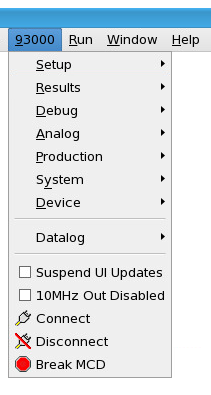

93000 menu and its tools
The 93000 menu and the Test Program Explorer view of SmarTest Work Center contain the controls for accessing the SmarTest tools

Menu |
Function/Tool |
|---|---|
|
|
|
|
|
|
|
|
|
|
|
|
93000 > Device |
|
93000 |
Suspend UI Updates control: Suspending and resuming UI updates 10 Mhz Reference Clock output disable control: |
Group |
Tool |
|---|---|
Device information |
|
Testfloor information |
|
Test Results |
Tools opened as perspectives
Functional changes
- Introduced before SmarTest 6.3.2
- SmarTest 6.5.2: New added menu item 93000 > Device.
- SmarTest 7.0.3: Test control tool removed from 93000 > Setup menu
- SmarTest 7.0.3: Test control removed from Test Program Explorer
- SmarTest 7.0.3: Removed Memory Test submenu
- SmarTest 7.1.0: Added Protocol Editor
- SmarTest 7.2.0: Replaced Result Analysis Tool and Histogram Tool with Integrated Result Tool
- SmarTest 7.5.4: Added 93000 top-level menu items.